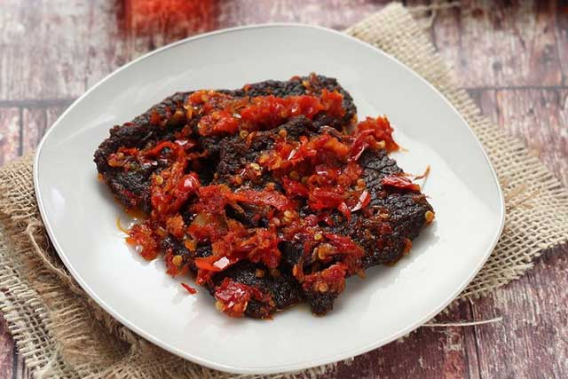
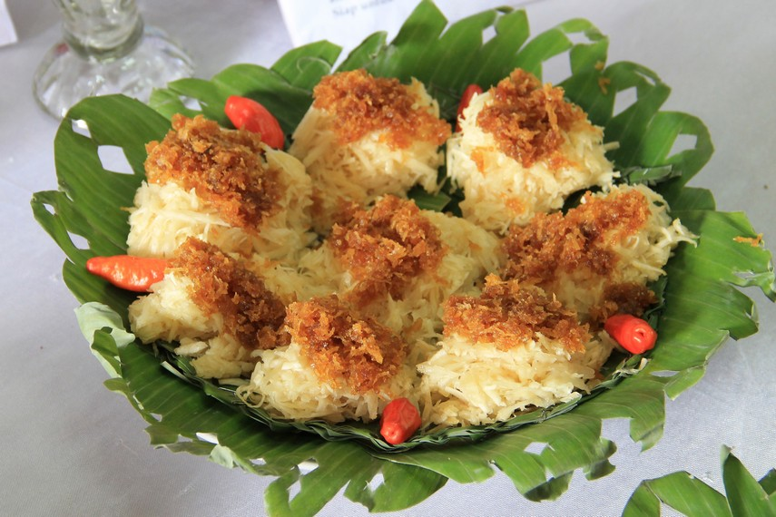

Rendang

Makanan khas Padang Sumatera Barat pertama adalah rendang. Rendang yang terbuat dari daging sapi ini bahkan dinobatkan dalam seratus daftar makanan terenak sedunia versi CNN. Racikan rempah-rempah yang kuat disertai dengan daging yang lembut membuat rasa rendang ini banyak diburu oleh banyak orang. Masakan rendang ini merupakan masakan yang umum kita jumpai jika berkunjung ke warung padang. Kelembutan daging dan bumbu kuahnya yang gurih membuat lidah penikmatnya akan ketagihan ingin menikmatinya lagi dan lagi. Rendang ini dimasak dalam waktu yang sangat lama. Karena proses masak yang memakan waktu itulah yang membaut bumbu rendang meresap sempurna sampai ke bagian terdalam daging sapi. Menyantap rendang hanya ditemani dengan nasi putih saja sudah terasa nikmatnya.
Dendeng
Makanan khas Padang yang enak berikutnya adalah dendeng. Dendeng biasanya juga dibuat dari daging sapi, sama seperti rendang. Meskipun sama-sama terbuat dari daging sapi, namun tekstur dendeng lebih cenderung keras jika dibandingkan dengan tektur daging pada rendang. Dendeng biasanya dimasak hanya dengan digoreng atau ditumis saja. Dendeng dibuat dengan cara menjemur daging sapi hingga benar-benar kering. Namun sebelumnya daging sapi yang digunakan sebelum dijemur sudah diberi bumbu berupa rempah-rempah yang akan membuat daging sapi menjadi lebih awet. Selain itu, rempah-rempah ini juga akan memperkuat rasa dari dendeng itu sendiri. Mengolah daging menjadi dendeng tujuan utamanya adalah untuk membuat daging lebih awet.
Kepala Kakap

Gulai kepala kakap adalah hidangan khas Indonesia yang menghadirkan kepala ikan kakap yang dimasak dalam bumbu gulai khas. Proses pembuatannya dimulai dengan merebus atau mengukus kepala kakap terlebih dahulu untuk memastikan kebersihannya. Selanjutnya, bumbu gulai yang kaya rempah seperti serai, jahe, kunyit, bawang merah, bawang putih, kemiri, dan rempah-rempah lainnya dihaluskan atau dicincang halus, kemudian ditumis dalam minyak hingga harum. Setelah itu, santan dituangkan ke dalam tumisan rempah dan diaduk hingga tercampur merata. Kemudian, kepala kakap dimasukkan ke dalam bumbu gulai tersebut dan direbus bersama bumbu hingga matang dan kuahnya meresap ke dalam daging ikan. Proses ini biasanya memakan waktu agar bumbu benar-benar meresap dan ikan menjadi empuk. Gulai kepala kakap ini biasanya memiliki cita rasa gurih, rempah yang kaya, serta aroma yang menggugah selera. Hidangan ini umumnya disajikan panas dan dapat dinikmati bersama dengan nasi putih hangat sebagai hidangan utama yang lezat dan menggugah selera.
Ayam Bakar

Ayam bakar adalah hidangan Indonesia yang terdiri dari potongan-potongan ayam yang dimasak dengan cara dipanggang atau dibakar setelah direndam dalam bumbu yang kaya rempah. Biasanya, ayam bakar dimarinasi terlebih dahulu dengan bumbu seperti bawang putih, bawang merah, ketumbar, jahe, kunyit, garam, gula, kecap manis, dan bumbu lain sesuai selera. Proses perendaman ini bertujuan agar bumbu meresap ke dalam daging ayam sehingga menghasilkan cita rasa yang kaya dan menggoda. Setelah direndam dalam bumbu, potongan ayam kemudian dipanggang atau dibakar di atas bara api atau dalam oven sampai matang dengan aroma yang harum dan kaya rempah. Ayam bakar seringkali disajikan dengan nasi putih hangat, lalapan (sayuran mentah), dan sambal sebagai hidangan utama yang lezat dan menggugah selera.
Ayam Pop

Ayam pop adalah hidangan khas dari Padang, Sumatera Barat, Indonesia. Hidangan ini terdiri dari potongan ayam yang digoreng kering hingga renyah, kemudian disajikan dengan bumbu rempah khas. Proses membuat ayam pop dimulai dengan menggoreng potongan ayam hingga kecokelatan dan renyah di luar, sementara tetap lembut di dalamnya. Setelah itu, ayam dipanggang kembali atau digoreng sebentar dalam minyak panas bersama bumbu rempah yang terdiri dari bawang putih, bawang merah, cabai, daun jeruk, serai, dan rempah khas Padang lainnya. Bumbu rempah ini memberikan cita rasa pedas, harum, dan kaya rempah yang khas. Ayam pop sering disajikan dengan nasi putih hangat dan lalapan sebagai hidangan utama yang lezat dan memiliki cita rasa yang kuat dan menggugah selera.
Telor Dadar

Telur dadar Padang merupakan hidangan khas dari Padang, Sumatera Barat, Indonesia. Telur dadar ini memiliki ciri khas tersendiri dalam penyajiannya. Biasanya, telur ayam dikocok bersama bumbu rempah yang khas dari Padang. Proses pembuatannya dimulai dengan mencampur telur dengan bumbu rempah seperti bawang merah, bawang putih, cabai, garam, lada, dan bumbu khas Padang lainnya. Setelah bumbu tercampur merata dengan telur, adonan telur ini kemudian digoreng dalam wajan dengan minyak panas hingga matang dan berwarna kecokelatan di bagian luarnya. Telur dadar Padang seringkali memiliki cita rasa yang kaya rempah, pedas, dan gurih. Hidangan ini sering disajikan sebagai lauk pendamping nasi putih dalam hidangan makan siang atau makan malam. Selain itu, telur dadar Padang juga bisa menjadi tambahan pada hidangan lainnya, memberikan sentuhan rasa yang khas dari rempah Padang yang menggugah selera.
Sate Padang

Makanan khas Padang beserta penjelasannya yang satu ini adalah sate padang. Sate merupakan makanan yang diolah dengan cara dibakar menggunakan bara api yang menyala. Begitu pula dengan sate padang. Jika biasanya sate pada umumnya menggunakan bumbu berupa bumbu kacang, namun ketika Anda mencoba sate padang Anda tidak akan menemukan bumbu kacang di dalamnya. Sate padang ini menggunakan bumbu berupa bumbu kuning yang khas dan kuat akan aroma rempah-rempahnya. Bumbu dari sate padang ini cenderung kental. Disajikan bersama dengan lontong atau nasi, membuat sate padang ini sangat mengenyangkan. Bumbu rempah yang cenderung pedas ini membuat siapa saja selalu ingin menyantapnya.
Tunjang

Makanan khas Padang yang terkenal enak satu ini masih seputar gulai. Gulai satu ini bernama gulai tunjang. Gulai ini terbuat dari daging tunjang. Tunjang sendiri adalah kaki sapi. Jika biasanya masakan padang menggunakan bagian dagingnya, berbeda dari masakan yang satu ini. Masakan ini menggunakan kaki sapi sebagai bahan dasarnya. Selain itu, untuk bumbunya semuanya hampir sama. Seperti pada gulai pada umumnya, gulai ini menggunakan bumbu rempah seperti kunyit, lengkuas, cabe, merica, dan sereh. Bumbu-bumbu tersebut dipadukan dengan santan kelapa kental dan dimasak dengan menggunakan tungku dalam waktu lama membuat kaki sapi ini menjadi matang sempurna dan bumbunya benar-benar terasa sampai ke dalam.
Soto Padang

Makanan khas Padang Panjang yang berikutnya adalah soto padang. Soto padang tidak berbeda dari soto khas daerah lain di Indonesia. Soto padang ini menggunakan bahan dasar berupa ayam maupun daging sapi. Perbedaan antara soto padang dengna soto dari kota lain adalah soto khas padang ini disajikan bersamaan dengan potongan perkedel kentang yang sangat istimewa. Soto padang ini memiliki kuah yang cenderung bening. Mungkin tidak ada bedanya dengan kuah soto betawi yang bening. Proses penyajiannya adalah mengggunakan mie bihun dan potongan perkedel. Daging sapi yang dipilih adalah yang sudah diolah menjadi dendeng kemudian digoreng hingga kering. Hal ini pula yang membedakan soto padang dengan soto khas daerah lainnya. Meskipun menggunakan dendeng, namun dagingnya tetap lembut di lidah.
Kacimuih
Masakan khas kota Padang yang terkenal satu ini sebenarnya bukan makanan berat, melainkan makanan ringan semacam camilan untuk teman berbincang. Meskipun bukan makanan berat, namun mengonsumsi makanan ini sudah cukup membuat perut kamu terisi untuk sementara waktu. Sebab makanan ini terbuat dari singkong yang dimasak dengan cara diparut dan dikukus. Cara penyajian dari makanan ini adalah singkong yang sudah diparut kasar dan sudah dikukus ini kemudian diberi taburan berupa parutan kelapa dengan taburan gula berupa gula pasir atau gula merah. Rasanya sangat gurih dan nikmat. Apalagi jika kamu ingin bersantai sambil minum kopi, makanan ini semakin membuat suasana santai kamu semakin mengenyangkan.
Copyright@Kelompok 2 2023